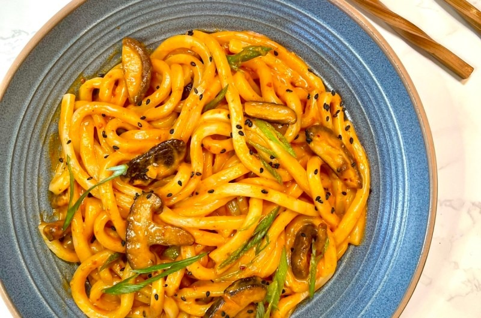

Gochujang Udon

Based on Ian Kewks Cremay Gochujang Mushroom Udon recipe.
Ingredients
- Frozen Udon
- Butter
- garlic
- milk
- gochujang
- soy sauce
- brown sugar
- Meat (any of your liking)
Steps
- In a boiling pot of water, defrost your udon until noodles are separated.
- Cut up your garlic.
- In a pan, fry your meat with butter and garlic.
- When noodles are ready, strain out the water and add the noodles to the pan.
- Add sauce including soy sauce, brown sugar and gochujang to your taste.
- Add milk and mix until it becomes a creamy consistency.
- Once mixed well, ready to serve.
Homepage